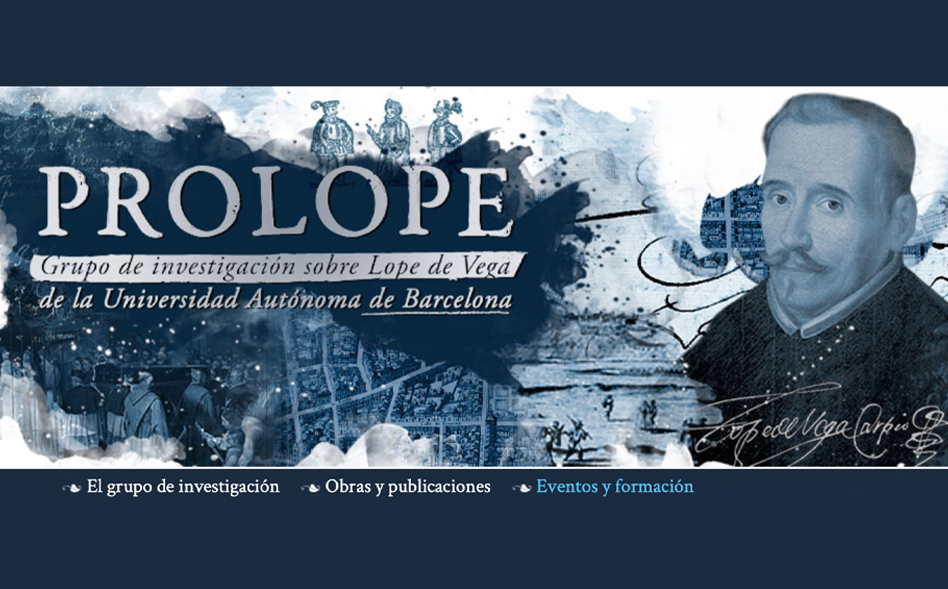

Un paseo guiado por el nuevo sitio web de PROLOPE
La arquitectura del nuevo sitio web pretende ofrecer una información exhaustiva, fácilmente accesible y comprensible sobre nuestro grupo, miembros, proyectos de investigación y financiación; nuestro método de trabajo, organización y funcionamiento; nuestras publicaciones, producción y actividad científica; hemos incluido asimismo unas presentaciones básicas sobre la vida y figura de Lope de Vega o la historia editorial y de transmisión de su teatro.
Inicio
En la página de Inicio se ofrecerán las Noticias relacionadas con el grupo de investigación, así como traducción a varias lenguas de un texto de presentación de los contenidos del sitio web que coincide con el paseo por la web que proponemos a continuación. Desde esta misma página, y desde cualquier página del sitio se ofrecerán datos básicos sobre el contacto y ubicación del grupo así como acceso a nuestra revista, el Anuario Lope de Vega.
El grupo de investigación
PROLOPE fue fundado en 1989 en la Universitat Autònoma de Barcelona por Alberto Blecua (su Investigador Principal) y es dirigido en la actualidad por Gonzalo Pontón y Ramón Valdés, tiene por principal objetivo llevar a cabo la edición crítica del teatro completo de Lope de Vega. PROLOPE es un gran equipo de personas en el que actualmente se integra una treintena de prestigiosos investigadores de todo el mundo (acceda a Miembros). Desde su creación, PROLOPE ha contado con el apoyo financiero de instituciones públicas y privadas y ha colaborado con distintas entidades (acceda a Historial). Para el desarrollo de sus proyectos y su buen funcionamiento, declaración y logro de sus objetivos de investigación, PROLOPE aprobó unos Estatutos que asimismo son recogidos íntegramente en nuestra página web.
Obras y publicaciones
La obra dramática conservada de Lope, uno de los más grandes y prolíficos dramaturgos del Siglo de Oro y de la historia de la literatura universal (véase un resumen detallado de la Vida y obra de Lope de Vega en la sección que le dedicamos), se cifra en más de trescientas comedias de autoría segura, aparte de las de atribución dudosa. Por razones filológicas de peso, la base de nuestra labor de edición la constituyen las obras que se publicaron en las Partes de comedias, recopilaciones de doce piezas que se imprimieron mayoritariamente en vida de Lope, aunque también consideramos y utilizamos otros testimonios antiguos, otros impresos, manuscritos y por supuesto los numerosos manuscritos autógrafos conservados (véase la sección dedicada a la Transmisión y edición del teatro de Lope de Vega). La edición crítica de la Primera parte de comedias realizada por PROLOPE vio la luz en 1997, y en 2014 se ha publicado la Parte XIII, lo que supone 137 comedias editadas, prologadas y anotadas según criterios filológicos. Y seguimos adelante. En la sección Partes de Comedias se ofrece una lista de todas las que ya hemos editado; para obtener una lista completa de ediciones de comedias, sea en Partes o comedias sueltas, así como estudios promovidos y generados por nuestro grupo, véase la sección Bibliografía de Prolope. Otro de los objetivos que recientemente se ha marcado el grupo es la elaboración de ediciones digitales (véase el número 20 de nuestro Anuario Lope de Vega). En la sección Biblioteca Virtual de PROLOPE se pueden leer y consultar algunas comedias editadas por PROLOPE en versión electrónica.
Para realizar nuestras ediciones PROLOPE estableció unos Criterios de edición que reflejan nuestro método de trabajo y también recogemos en la página web correspondiente, acompañándolos de materiales que pueden ser de ayuda para todos nuestros colaboradores así como en general para el editor del teatro de Lope de Vega y del Siglo de Oro.
Pero además de la edición de comedias, y en la búsqueda de un eco e intercambio de ideas más amplio con investigadores de todo el mundo, PROLOPE ha creado también otros foros de encuentro y debate. En esa línea hay que señalar, en primer lugar, la creación en 1995 del Anuario Lope de Vega. Texto, Literatura, Cultura, revista científica que ha alcanzado el volumen XXI (2015) y que desde 2011 se publica únicamente en red (en la página El Anuario Lope de Vega se ofrece una breve historia de la publicación así como acceso a la misma). En la misma dirección cabe mencionar la organización de numerosos congresos, seminarios y coloquios internacionales.
Eventos y formación
En la sección Eventos se ofrecen sendas listas completas de todos los congresos y seminarios internacionales organizados por el grupo de investigación PROLOPE, de modo individual, o bien en colaboración con otros grupos de investigación, dado que uno de nuestros objetivos es la comunicación, intercambio de ideas y colaboración con otras instituciones y equipos españoles o extranjeros
Otra de las tareas fundamentales asumidas por PROLOPE es la formación de investigadores y doctores. Por ello PROLOPE participa en la formación doctoral, en el ámbito del Programa de Doctorado en Filología Española de la Universitat Autònoma de Barcelona, y se ofrece como lugar de destino para intercambios y estancias de carácter científico predoctorales o postdoctorales, así como de profesores e investigadores senior. Numerosos doctorandos, hoy doctores, han realizado su formación en nuestro grupo de investigación.
← Volver a todas las noticias